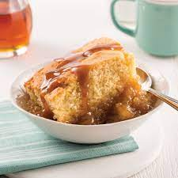

Pouding Chomeur

Decscription
This classic French Canadian dessert highlights one of the best ingreidents around - maple syrup! Dig into this delicious gateau on a cold day for a warm treat.
Ingredients
Cake:
- 1 1/2 cups flour
- 1 tsp baking powder
- 1/4 tsp salt
- 1/4 cup butter
- 1 cup sugar
- 1 cup milk
Sauce:
- 1 cup maple syrup
- 1 cup brown sugar
- 1 cup boiling water
- 1/4 cup butter
Steps
- Mix together flour, baking powder and salt and set aside
- In a separate bowl, cream butter and sugar until combined, paler and fluffier
- Slowly alternate incorporating milk and dry ingredients, being careful not to overmix until combined
- Pour mixed batter into a greased 9x13 cake pan
- Preheat oven to 325 degrees Fahrenheit
- While the oven preheats, combine maple syrup, brown sugar and butter with boiling water in a saucepan
- Boil sauce mixture for a few minutes until it thickens
- Pour sauce mixture over cake batter, without mixing and bake at 325 degrees for around 45 minutes, until golden brown at the edges
- Enjoy!
Back to home